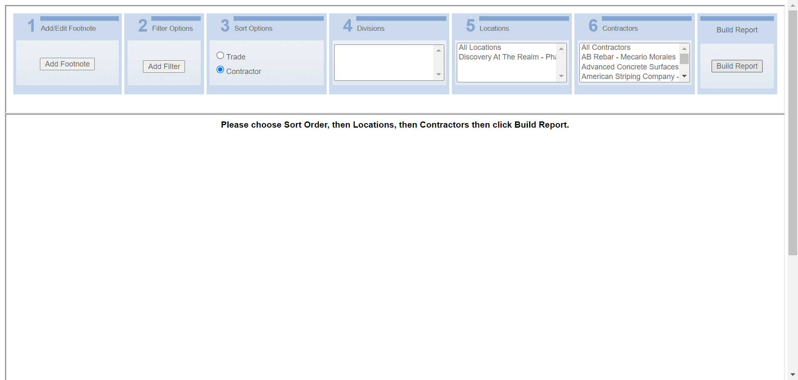

Total Tests
Total Steps
Total Time Taken (Current Run)
0h 29m 3s+120ms
Total Time Taken (Overall)
0h 29m 3s+120ms
Start
2021-09-01 09:38:02
End
2021-09-01 10:07:05
Pass Percentage
Environment
| Param | Value |
|---|---|
| OS | Windows 10 |
| User Name | NDave |
| Java Version | 15.0.2 |
| Host Name | Nourtek-100 |
Categories
| Name |
|---|
| Functional Test |
Tests
-
Report_ContractorCloseOutTracking_OldTest :: testContractorCloseOutTrackingOld fail2021-09-01 09:38:13 2021-09-01 09:39:40 0h 1m 27s+849mstestContractorCloseOutTrackingOldFunctional Test
Status Timestamp Details 09:38:13 Test Started 09:38:13 Browser Name chrome 09:38:26 https://beta.wrapportal.com/login.aspx?ReturnUrl=%2f Current Url 09:38:26 nourlipscomb User Name Entered Successfully 09:38:26 (A!1IdIX7F Password Entered Successfully 09:38:28 Clicked On Login Button 09:38:28 Login Successfully 09:38:35 Clicked on Report Module Icon 09:38:37 Respective Program Select Form Dropdown 09:38:43 Contractor CloseOut Tracking Report is Selected 09:38:52 Project Selected Successfully 09:38:55 Contractor Selected Successfully 09:38:59 Clicked On Build Report Button 09:39:02 Report Generated 
09:39:04 Report Header Name Matched 09:39:04 Report Generated Successfully 09:39:14 Pdf Generated 
09:39:29 Excel file is not Downloaded Successfully 09:39:40 testContractorCloseOutTrackingOld Test has been Passed1 09:39:40 Test Ended -
Report_PayrollAuditSummaryOld_Test :: testPayrollAuditSummaryOld fail2021-09-01 09:39:54 2021-09-01 09:41:42 0h 1m 47s+485mstestPayrollAuditSummaryOldFunctional Test
Status Timestamp Details 09:39:54 Test Started 09:39:54 Browser Name chrome 09:40:08 https://beta.wrapportal.com/login.aspx?ReturnUrl=%2f Current Url 09:40:08 nourlipscomb User Name Entered Successfully 09:40:08 (A!1IdIX7F Password Entered Successfully 09:40:10 Clicked On Login Button 09:40:10 Login Successfully 09:40:17 Clicked on Report Module Icon 09:40:19 Respective Program Select Form Dropdown 09:40:24 Payroll Audit Summar By Work Class Report is Selected 09:40:28 Project Selected Successfully 09:40:33 Contractor Selected Successfully 09:40:38 Clicked On Build Report Button 09:40:41 Report Generated 09:41:11 org.openqa.selenium.NoSuchElementException: no such element: Unable to locate element: {"method":"xpath","selector":"//body/table/tbody/tr[4]/td[1]"} (Session info: chrome=92.0.4515.159) For documentation on this error, please visit: https://selenium.dev/exceptions/#no_such_element Build info: version: '4.0.0-alpha-4', revision: 'c2d955b49e' System info: host: 'NOURTEK-100', ip: '192.168.29.211', os.name: 'Windows 10', os.arch: 'amd64', os.version: '10.0', java.version: '15.0.2' Driver info: org.openqa.selenium.chrome.ChromeDriver Capabilities {acceptInsecureCerts: false, browserName: chrome, browserVersion: 92.0.4515.159, chrome: {chromedriverVersion: 92.0.4515.107 (87a818b10553..., userDataDir: C:\Users\NDave\AppData\Loca...}, goog:chromeOptions: {debuggerAddress: localhost:51648}, javascriptEnabled: true, networkConnectionEnabled: false, pageLoadStrategy: normal, platform: WINDOWS, platformName: WINDOWS, proxy: Proxy(), setWindowRect: true, strictFileInteractability: false, timeouts: {implicit: 0, pageLoad: 300000, script: 30000}, unhandledPromptBehavior: dismiss and notify, webauthn:extension:credBlob: true, webauthn:extension:largeBlob: true, webauthn:virtualAuthenticators: true} Session ID: db24df7abe1a0bdf6175cf79b2328fc4 *** Element info: {Using=xpath, value=//body/table/tbody/tr[4]/td[1]}Report Header Name Not Matched 09:41:12 Something Went Wrong 
09:41:42 testPayrollAuditSummaryOld Test has been Failed2 09:41:42 org.openqa.selenium.NoSuchElementException: no such element: Unable to locate element: {"method":"xpath","selector":"//a[@id='HlinkExportPDF']"} (Session info: chrome=92.0.4515.159) For documentation on this error, please visit: https://selenium.dev/exceptions/#no_such_element Build info: version: '4.0.0-alpha-4', revision: 'c2d955b49e' System info: host: 'NOURTEK-100', ip: '192.168.29.211', os.name: 'Windows 10', os.arch: 'amd64', os.version: '10.0', java.version: '15.0.2' Driver info: org.openqa.selenium.chrome.ChromeDriver Capabilities {acceptInsecureCerts: false, browserName: chrome, browserVersion: 92.0.4515.159, chrome: {chromedriverVersion: 92.0.4515.107 (87a818b10553..., userDataDir: C:\Users\NDave\AppData\Loca...}, goog:chromeOptions: {debuggerAddress: localhost:51648}, javascriptEnabled: true, networkConnectionEnabled: false, pageLoadStrategy: normal, platform: WINDOWS, platformName: WINDOWS, proxy: Proxy(), setWindowRect: true, strictFileInteractability: false, timeouts: {implicit: 0, pageLoad: 300000, script: 30000}, unhandledPromptBehavior: dismiss and notify, webauthn:extension:credBlob: true, webauthn:extension:largeBlob: true, webauthn:virtualAuthenticators: true} Session ID: db24df7abe1a0bdf6175cf79b2328fc4 *** Element info: {Using=xpath, value=//a[@id='HlinkExportPDF']} at java.base/jdk.internal.reflect.NativeConstructorAccessorImpl.newInstance0(Native Method) at java.base/jdk.internal.reflect.NativeConstructorAccessorImpl.newInstance(NativeConstructorAccessorImpl.java:64) at java.base/jdk.internal.reflect.DelegatingConstructorAccessorImpl.newInstance(DelegatingConstructorAccessorImpl.java:45) at java.base/java.lang.reflect.Constructor.newInstanceWithCaller(Constructor.java:500) at java.base/java.lang.reflect.Constructor.newInstance(Constructor.java:481) at org.openqa.selenium.remote.codec.w3c.W3CHttpResponseCodec.createException(W3CHttpResponseCodec.java:196) at org.openqa.selenium.remote.codec.w3c.W3CHttpResponseCodec.decode(W3CHttpResponseCodec.java:129) at org.openqa.selenium.remote.codec.w3c.W3CHttpResponseCodec.decode(W3CHttpResponseCodec.java:53) at org.openqa.selenium.remote.HttpCommandExecutor.execute(HttpCommandExecutor.java:161) at org.openqa.selenium.remote.service.DriverCommandExecutor.execute(DriverCommandExecutor.java:83) at org.openqa.selenium.remote.RemoteWebDriver.execute(RemoteWebDriver.java:582) at org.openqa.selenium.remote.RemoteWebDriver.findElement(RemoteWebDriver.java:333) at org.openqa.selenium.remote.RemoteWebDriver.findElementByXPath(RemoteWebDriver.java:451) at org.openqa.selenium.By$ByXPath.findElement(By.java:394) at org.openqa.selenium.remote.RemoteWebDriver.findElement(RemoteWebDriver.java:325) at ObjectRepository.Report_PayrollAuditSummaryOld.linkExportToPDF(Report_PayrollAuditSummaryOld.java:90) at TestScript.Report_PayrollAuditSummaryOld_Test.testPayrollAuditSummaryOld(Report_PayrollAuditSummaryOld_Test.java:84) at java.base/jdk.internal.reflect.NativeMethodAccessorImpl.invoke0(Native Method) at java.base/jdk.internal.reflect.NativeMethodAccessorImpl.invoke(NativeMethodAccessorImpl.java:64) at java.base/jdk.internal.reflect.DelegatingMethodAccessorImpl.invoke(DelegatingMethodAccessorImpl.java:43) at java.base/java.lang.reflect.Method.invoke(Method.java:564) at org.testng.internal.MethodInvocationHelper.invokeMethod(MethodInvocationHelper.java:133) at org.testng.internal.TestInvoker.invokeMethod(TestInvoker.java:598) at org.testng.internal.TestInvoker.invokeTestMethod(TestInvoker.java:173) at org.testng.internal.MethodRunner.runInSequence(MethodRunner.java:46) at org.testng.internal.TestInvoker$MethodInvocationAgent.invoke(TestInvoker.java:824) at org.testng.internal.TestInvoker.invokeTestMethods(TestInvoker.java:146) at org.testng.internal.TestMethodWorker.invokeTestMethods(TestMethodWorker.java:146) at org.testng.internal.TestMethodWorker.run(TestMethodWorker.java:128) at java.base/java.util.ArrayList.forEach(ArrayList.java:1511) at org.testng.TestRunner.privateRun(TestRunner.java:794) at org.testng.TestRunner.run(TestRunner.java:596) at org.testng.SuiteRunner.runTest(SuiteRunner.java:377) at org.testng.SuiteRunner.runSequentially(SuiteRunner.java:371) at org.testng.SuiteRunner.privateRun(SuiteRunner.java:332) at org.testng.SuiteRunner.run(SuiteRunner.java:276) at org.testng.SuiteRunnerWorker.runSuite(SuiteRunnerWorker.java:53) at org.testng.SuiteRunnerWorker.run(SuiteRunnerWorker.java:96) at org.testng.TestNG.runSuitesSequentially(TestNG.java:1212) at org.testng.TestNG.runSuitesLocally(TestNG.java:1134) at org.testng.TestNG.runSuites(TestNG.java:1063) at org.testng.TestNG.run(TestNG.java:1031) at org.testng.remote.AbstractRemoteTestNG.run(AbstractRemoteTestNG.java:115) at org.testng.remote.RemoteTestNG.initAndRun(RemoteTestNG.java:251) at org.testng.remote.RemoteTestNG.main(RemoteTestNG.java:77)09:41:42 
09:41:42 Test Ended -
Report_EnrollmentListReportOld_Test :: testEnrollmentListReportOld fail2021-09-01 09:42:17 2021-09-01 09:43:31 0h 1m 13s+646mstestEnrollmentListReportOldFunctional Test
Status Timestamp Details 09:42:17 Test Started 09:42:17 Browser Name chrome 09:42:29 https://beta.wrapportal.com/login.aspx?ReturnUrl=%2f Current Url 09:42:30 nourlipscomb User Name Entered Successfully 09:42:30 (A!1IdIX7F Password Entered Successfully 09:42:31 Clicked On Login Button 09:42:31 Login Successfully 09:42:37 Clicked on Report Module Icon 09:42:40 Respective Program Select Form Dropdown 09:42:45 Enrollment List Report Report is Selected 09:42:53 Project Selected Successfully 09:42:56 Contractor Selected Successfully 09:42:59 Clicked On Build Report Button 09:43:02 Report Generated 09:43:03 Report Header Name Matched 09:43:03 Report Generated Successfully 09:43:04 Pdf Generated 
09:43:20 Excel file is not Downloaded Successfully 09:43:31 testEnrollmentListReportOld Test has been Passed1 09:43:31 Test Ended -
Report_EnrollmentDetailReportOld_Test :: testEnrollmentDetailReportOld fail2021-09-01 09:43:43 2021-09-01 09:44:58 0h 1m 14s+914mstestEnrollmentDetailReportOldFunctional Test
Status Timestamp Details 09:43:43 Test Started 09:43:43 Browser Name chrome 09:43:57 https://beta.wrapportal.com/login.aspx?ReturnUrl=%2f Current Url 09:43:58 nourlipscomb User Name Entered Successfully 09:43:58 (A!1IdIX7F Password Entered Successfully 09:43:59 Clicked On Login Button 09:43:59 Login Successfully 09:44:06 Clicked on Report Module Icon 09:44:08 Respective Program Select Form Dropdown 09:44:13 Enrollment Detail Report Report is Selected 09:44:18 Project Selected Successfully 09:44:22 Contractor Selected Successfully 09:44:26 Clicked On Build Report Button 09:44:29 Report Generated 09:44:29 Report Header Name Matched 09:44:29 Report Header Name Matched 09:44:29 Report Generated Successfully 09:44:37 Pdf Generated 
09:44:53 Excel file is not Downloaded Successfully 09:44:58 testEnrollmentDetailReportOld Test has been Passed1 09:44:58 Test Ended -
Report_ExpiringCertificateReportOld_Test :: testExpiringCertificateReportOld fail2021-09-01 09:45:05 2021-09-01 09:46:20 0h 1m 14s+600mstestExpiringCertificateReportOldFunctional Test
Status Timestamp Details 09:45:05 Test Started 09:45:05 Browser Name chrome 09:45:19 https://beta.wrapportal.com/login.aspx?ReturnUrl=%2f Current Url 09:45:19 nourlipscomb User Name Entered Successfully 09:45:19 (A!1IdIX7F Password Entered Successfully 09:45:21 Clicked On Login Button 09:45:21 Login Successfully 09:45:27 Clicked on Report Module Icon 09:45:29 Respective Program Select Form Dropdown 09:45:34 Expiring Certificate Report Report is Selected 09:45:40 Project Selected Successfully 09:45:44 Contractor Selected Successfully 09:45:48 Clicked On Build Report Button 09:45:51 Report Generated 09:45:51 Report Header Name Matched 09:45:51 Report Generated Successfully 09:45:53 Pdf Generated 
09:46:08 Excel file is not Downloaded Successfully 09:46:20 testExpiringCertificateReportOld Test has been Passed1 09:46:20 Test Ended -
Report_LossControlReportOld_Test :: testLossControlReportOld fail2021-09-01 09:46:27 2021-09-01 09:47:39 0h 1m 12s+47mstestLossControlReportOldFunctional Test
Status Timestamp Details 09:46:27 Test Started 09:46:27 Browser Name chrome 09:46:40 https://beta.wrapportal.com/login.aspx?ReturnUrl=%2f Current Url 09:46:40 nourlipscomb User Name Entered Successfully 09:46:40 (A!1IdIX7F Password Entered Successfully 09:46:42 Clicked On Login Button 09:46:42 Login Successfully 09:46:48 Clicked on Report Module Icon 09:46:50 Respective Program Select Form Dropdown 09:46:56 Loss Control Report Report is Selected 09:46:59 Project Selected Successfully 09:47:02 Contractor Selected Successfully 09:47:05 Clicked On Build Report Button 09:47:08 Report Generated 
09:47:08 Report Header Name Matched 09:47:08 Report Generated Successfully 09:47:39 testLossControlReportOld Test has been Failed2 09:47:39 org.openqa.selenium.NoSuchElementException: no such element: Unable to locate element: {"method":"xpath","selector":"//a[@id='HlinkExportPDF']"} (Session info: chrome=92.0.4515.159) For documentation on this error, please visit: https://selenium.dev/exceptions/#no_such_element Build info: version: '4.0.0-alpha-4', revision: 'c2d955b49e' System info: host: 'NOURTEK-100', ip: '192.168.29.211', os.name: 'Windows 10', os.arch: 'amd64', os.version: '10.0', java.version: '15.0.2' Driver info: org.openqa.selenium.chrome.ChromeDriver Capabilities {acceptInsecureCerts: false, browserName: chrome, browserVersion: 92.0.4515.159, chrome: {chromedriverVersion: 92.0.4515.107 (87a818b10553..., userDataDir: C:\Users\NDave\AppData\Loca...}, goog:chromeOptions: {debuggerAddress: localhost:62631}, javascriptEnabled: true, networkConnectionEnabled: false, pageLoadStrategy: normal, platform: WINDOWS, platformName: WINDOWS, proxy: Proxy(), setWindowRect: true, strictFileInteractability: false, timeouts: {implicit: 0, pageLoad: 300000, script: 30000}, unhandledPromptBehavior: dismiss and notify, webauthn:extension:credBlob: true, webauthn:extension:largeBlob: true, webauthn:virtualAuthenticators: true} Session ID: c9aaa56fdd9ac5edd05fd7ec84b19714 *** Element info: {Using=xpath, value=//a[@id='HlinkExportPDF']} at java.base/jdk.internal.reflect.NativeConstructorAccessorImpl.newInstance0(Native Method) at java.base/jdk.internal.reflect.NativeConstructorAccessorImpl.newInstance(NativeConstructorAccessorImpl.java:64) at java.base/jdk.internal.reflect.DelegatingConstructorAccessorImpl.newInstance(DelegatingConstructorAccessorImpl.java:45) at java.base/java.lang.reflect.Constructor.newInstanceWithCaller(Constructor.java:500) at java.base/java.lang.reflect.Constructor.newInstance(Constructor.java:481) at org.openqa.selenium.remote.codec.w3c.W3CHttpResponseCodec.createException(W3CHttpResponseCodec.java:196) at org.openqa.selenium.remote.codec.w3c.W3CHttpResponseCodec.decode(W3CHttpResponseCodec.java:129) at org.openqa.selenium.remote.codec.w3c.W3CHttpResponseCodec.decode(W3CHttpResponseCodec.java:53) at org.openqa.selenium.remote.HttpCommandExecutor.execute(HttpCommandExecutor.java:161) at org.openqa.selenium.remote.service.DriverCommandExecutor.execute(DriverCommandExecutor.java:83) at org.openqa.selenium.remote.RemoteWebDriver.execute(RemoteWebDriver.java:582) at org.openqa.selenium.remote.RemoteWebDriver.findElement(RemoteWebDriver.java:333) at org.openqa.selenium.remote.RemoteWebDriver.findElementByXPath(RemoteWebDriver.java:451) at org.openqa.selenium.By$ByXPath.findElement(By.java:394) at org.openqa.selenium.remote.RemoteWebDriver.findElement(RemoteWebDriver.java:325) at ObjectRepository.Report_EnrollmentListReportOld.linkExportToPDF(Report_EnrollmentListReportOld.java:90) at TestScript.Report_LossControlReportOld_Test.testLossControlReportOld(Report_LossControlReportOld_Test.java:80) at java.base/jdk.internal.reflect.NativeMethodAccessorImpl.invoke0(Native Method) at java.base/jdk.internal.reflect.NativeMethodAccessorImpl.invoke(NativeMethodAccessorImpl.java:64) at java.base/jdk.internal.reflect.DelegatingMethodAccessorImpl.invoke(DelegatingMethodAccessorImpl.java:43) at java.base/java.lang.reflect.Method.invoke(Method.java:564) at org.testng.internal.MethodInvocationHelper.invokeMethod(MethodInvocationHelper.java:133) at org.testng.internal.TestInvoker.invokeMethod(TestInvoker.java:598) at org.testng.internal.TestInvoker.invokeTestMethod(TestInvoker.java:173) at org.testng.internal.MethodRunner.runInSequence(MethodRunner.java:46) at org.testng.internal.TestInvoker$MethodInvocationAgent.invoke(TestInvoker.java:824) at org.testng.internal.TestInvoker.invokeTestMethods(TestInvoker.java:146) at org.testng.internal.TestMethodWorker.invokeTestMethods(TestMethodWorker.java:146) at org.testng.internal.TestMethodWorker.run(TestMethodWorker.java:128) at java.base/java.util.ArrayList.forEach(ArrayList.java:1511) at org.testng.TestRunner.privateRun(TestRunner.java:794) at org.testng.TestRunner.run(TestRunner.java:596) at org.testng.SuiteRunner.runTest(SuiteRunner.java:377) at org.testng.SuiteRunner.runSequentially(SuiteRunner.java:371) at org.testng.SuiteRunner.privateRun(SuiteRunner.java:332) at org.testng.SuiteRunner.run(SuiteRunner.java:276) at org.testng.SuiteRunnerWorker.runSuite(SuiteRunnerWorker.java:53) at org.testng.SuiteRunnerWorker.run(SuiteRunnerWorker.java:96) at org.testng.TestNG.runSuitesSequentially(TestNG.java:1212) at org.testng.TestNG.runSuitesLocally(TestNG.java:1134) at org.testng.TestNG.runSuites(TestNG.java:1063) at org.testng.TestNG.run(TestNG.java:1031) at org.testng.remote.AbstractRemoteTestNG.run(AbstractRemoteTestNG.java:115) at org.testng.remote.RemoteTestNG.initAndRun(RemoteTestNG.java:251) at org.testng.remote.RemoteTestNG.main(RemoteTestNG.java:77)09:47:39 09:47:39 Test Ended -
Report_QuarterlyEnrollmenteportOld_Test :: testQuarterlyEnrollmenteportOld fail2021-09-01 09:48:14 2021-09-01 09:49:18 0h 1m 4s+697mstestQuarterlyEnrollmenteportOldFunctional Test
Status Timestamp Details 09:48:14 Test Started 09:48:14 Browser Name chrome 09:48:27 https://beta.wrapportal.com/login.aspx?ReturnUrl=%2f Current Url 09:48:27 nourlipscomb User Name Entered Successfully 09:48:27 (A!1IdIX7F Password Entered Successfully 09:48:29 Clicked On Login Button 09:48:29 Login Successfully 09:48:35 Clicked on Report Module Icon 09:48:37 Respective Program Select Form Dropdown 09:48:43 Quarterly Enrollment Report Report is Selected 09:48:47 Project Selected Successfully 09:48:50 Contractor Selected Successfully 09:48:54 Clicked On Build Report Button 09:48:57 Report Generated 09:48:57 Report Header Name Matched 09:48:57 Report Generated Successfully 09:49:07 Excel file is not Downloaded Successfully 09:49:18 testQuarterlyEnrollmenteportOld Test has been Passed1 09:49:18 Test Ended -
Report_CertificateTrackingReportOld_Test :: testCertificateTrackingReportOld fail2021-09-01 09:49:26 2021-09-01 09:50:38 0h 1m 12s+321mstestCertificateTrackingReportOldFunctional Test
Status Timestamp Details 09:49:26 Test Started 09:49:26 Browser Name chrome 09:49:39 https://beta.wrapportal.com/login.aspx?ReturnUrl=%2f Current Url 09:49:39 nourlipscomb User Name Entered Successfully 09:49:39 (A!1IdIX7F Password Entered Successfully 09:49:41 Clicked On Login Button 09:49:41 Login Successfully 09:49:47 Clicked on Report Module Icon 09:49:49 Respective Program Select Form Dropdown 09:49:54 Certificate Tracking Report Report is Selected 09:49:57 Project Selected Successfully 09:50:00 Clicked On Build Report Button 09:50:03 Report Generated 
09:50:04 Report Header Name Matched 09:50:04 Report Generated Successfully 09:50:11 Pdf Generated 09:50:26 Excel file is not Downloaded Successfully 09:50:38 testCertificateTrackingReportOld Test has been Passed1 09:50:38 Test Ended -
Report_ContractorCostSummaryOld_Test :: testContractorCostSummaryOld fail2021-09-01 09:50:45 2021-09-01 09:52:07 0h 1m 21s+381mstestContractorCostSummaryOldFunctional Test
Status Timestamp Details 09:50:45 Test Started 09:50:45 Browser Name chrome 09:50:59 https://beta.wrapportal.com/login.aspx?ReturnUrl=%2f Current Url 09:50:59 nourlipscomb User Name Entered Successfully 09:50:59 (A!1IdIX7F Password Entered Successfully 09:51:00 Clicked On Login Button 09:51:00 Login Successfully 09:51:07 Clicked on Report Module Icon 09:51:09 Respective Program Select Form Dropdown 09:51:14 Contractor Cost Summary Report is Selected 09:51:17 Project Selected Successfully 09:51:20 Contractor Selected Successfully 09:51:23 Clicked On Build Report Button 09:51:27 Report Generated 
09:51:29 Report Header Name Matched 09:51:29 Report Generated Successfully 09:51:40 Pdf Generated 
09:51:56 Excel file is not Downloaded Successfully 09:52:07 testContractorCostSummaryOld Test has been Passed1 09:52:07 Test Ended -
Report_ContractorDeductTrackingOld_Test :: testContractorDeductTrackingOld fail2021-09-01 09:52:14 2021-09-01 09:53:39 0h 1m 24s+323mstestContractorDeductTrackingOldFunctional Test
Status Timestamp Details 09:52:14 Test Started 09:52:14 Browser Name chrome 09:52:28 https://beta.wrapportal.com/login.aspx?ReturnUrl=%2f Current Url 09:52:28 nourlipscomb User Name Entered Successfully 09:52:28 (A!1IdIX7F Password Entered Successfully 09:52:30 Clicked On Login Button 09:52:30 Login Successfully 09:52:36 Clicked on Report Module Icon 09:52:38 Respective Program Select Form Dropdown 09:52:44 Contractor Deduct Tracking Report is Selected 09:52:47 Project Selected Successfully 09:52:50 Contractor Selected Successfully 09:52:54 Clicked On Build Report Button 09:52:57 Report Generated 
09:53:00 Report Header Name Matched 09:53:00 Report Generated Successfully 09:53:10 Pdf Generated 
09:53:28 Excel file is not Downloaded Successfully 09:53:39 testContractorDeductTrackingOld Test has been Passed1 09:53:39 Test Ended -
Report_LaborRateAnalysisOld_Test :: testLaborRateAnalysisOld fail2021-09-01 09:53:46 2021-09-01 09:55:06 0h 1m 20s+35mstestLaborRateAnalysisOldFunctional Test
Status Timestamp Details 09:53:46 Test Started 09:53:46 Browser Name chrome 09:54:00 https://beta.wrapportal.com/login.aspx?ReturnUrl=%2f Current Url 09:54:00 nourlipscomb User Name Entered Successfully 09:54:00 (A!1IdIX7F Password Entered Successfully 09:54:02 Clicked On Login Button 09:54:02 Login Successfully 09:54:08 Clicked on Report Module Icon 09:54:10 Respective Program Select Form Dropdown 09:54:16 Labor Rate Analysis Report is Selected 09:54:19 Project Selected Successfully 09:54:22 Contractor Selected Successfully 09:54:25 Clicked On Build Report Button 09:54:29 Report Generated 09:54:31 Report Header Name Matched 09:54:31 Report Generated Successfully 09:54:40 Pdf Generated 
09:54:55 Excel file is not Downloaded Successfully 09:55:06 testLaborRateAnalysisOld Test has been Passed1 09:55:06 Test Ended -
Report_SubcontractorStatusReportOld_Test :: testSubcontractorStatusReportOld fail2021-09-01 09:55:13 2021-09-01 09:56:30 0h 1m 17s+18mstestSubcontractorStatusReportOldFunctional Test
Status Timestamp Details 09:55:13 Test Started 09:55:13 Browser Name chrome 09:55:27 https://beta.wrapportal.com/login.aspx?ReturnUrl=%2f Current Url 09:55:27 nourlipscomb User Name Entered Successfully 09:55:27 (A!1IdIX7F Password Entered Successfully 09:55:28 Clicked On Login Button 09:55:28 Login Successfully 09:55:35 Clicked on Report Module Icon 09:55:37 Respective Program Select Form Dropdown 09:55:42 Subcontractor Status Report is Selected 09:55:47 Project Selected Successfully 09:55:53 Clicked On Build Report Button 09:55:57 Report Generated 09:55:57 Report Header Name Matched 09:55:57 Report Generated Successfully 09:56:04 Pdf Generated 09:56:19 Excel file is not Downloaded Successfully 09:56:30 testSubcontractorStatusReportOld Test has been Passed1 09:56:30 Test Ended -
Report_ContractorProfileOld_Test :: testContractorProfile fail2021-09-01 09:56:38 2021-09-01 09:57:54 0h 1m 16s+542mstestContractorProfileFunctional Test
Status Timestamp Details 09:56:38 Test Started 09:56:38 Browser Name chrome 09:56:52 https://beta.wrapportal.com/login.aspx?ReturnUrl=%2f Current Url 09:56:52 nourlipscomb User Name Entered Successfully 09:56:52 (A!1IdIX7F Password Entered Successfully 09:56:54 Clicked On Login Button 09:56:54 Login Successfully 09:57:00 Clicked on Report Module Icon 09:57:02 Respective Program Select Form Dropdown 09:57:07 Contractor Profile Report is Selected 09:57:10 Project Selected Successfully 09:57:13 Contractor Selected Successfully 09:57:17 Clicked On Build Report Button 09:57:20 Report Generated 
09:57:20 Report Header Name Matched 09:57:20 Report Generated Successfully 09:57:28 Pdf Generated 09:57:43 Excel file is not Downloaded Successfully 09:57:54 testContractorProfile Test has been Passed1 09:57:54 Test Ended -
Report_ClaimsReportOld_Test :: testClaimsReportOld fail2021-09-01 09:58:01 2021-09-01 09:59:12 0h 1m 11s+115mstestClaimsReportOldFunctional Test
Status Timestamp Details 09:58:01 Test Started 09:58:01 Browser Name chrome 09:58:14 https://beta.wrapportal.com/login.aspx?ReturnUrl=%2f Current Url 09:58:14 nourlipscomb User Name Entered Successfully 09:58:14 (A!1IdIX7F Password Entered Successfully 09:58:16 Clicked On Login Button 09:58:16 Login Successfully 09:58:22 Clicked on Report Module Icon 09:58:24 Respective Program Select Form Dropdown 09:58:29 Claims Report Report is Selected 09:58:32 Project Selected Successfully 09:58:35 Contractor Selected Successfully 09:58:39 Clicked On Build Report Button 09:58:42 Report Generated 
09:58:42 Report Header Name Matched 09:58:42 Report Generated Successfully 09:59:12 testClaimsReportOld Test has been Failed2 09:59:12 org.openqa.selenium.NoSuchElementException: no such element: Unable to locate element: {"method":"xpath","selector":"//a[@id='HlinkExportPDF']"} (Session info: chrome=92.0.4515.159) For documentation on this error, please visit: https://selenium.dev/exceptions/#no_such_element Build info: version: '4.0.0-alpha-4', revision: 'c2d955b49e' System info: host: 'NOURTEK-100', ip: '192.168.29.211', os.name: 'Windows 10', os.arch: 'amd64', os.version: '10.0', java.version: '15.0.2' Driver info: org.openqa.selenium.chrome.ChromeDriver Capabilities {acceptInsecureCerts: false, browserName: chrome, browserVersion: 92.0.4515.159, chrome: {chromedriverVersion: 92.0.4515.107 (87a818b10553..., userDataDir: C:\Users\NDave\AppData\Loca...}, goog:chromeOptions: {debuggerAddress: localhost:50551}, javascriptEnabled: true, networkConnectionEnabled: false, pageLoadStrategy: normal, platform: WINDOWS, platformName: WINDOWS, proxy: Proxy(), setWindowRect: true, strictFileInteractability: false, timeouts: {implicit: 0, pageLoad: 300000, script: 30000}, unhandledPromptBehavior: dismiss and notify, webauthn:extension:credBlob: true, webauthn:extension:largeBlob: true, webauthn:virtualAuthenticators: true} Session ID: da28c07f7eb04ace78bf2b06489f58b9 *** Element info: {Using=xpath, value=//a[@id='HlinkExportPDF']} at java.base/jdk.internal.reflect.NativeConstructorAccessorImpl.newInstance0(Native Method) at java.base/jdk.internal.reflect.NativeConstructorAccessorImpl.newInstance(NativeConstructorAccessorImpl.java:64) at java.base/jdk.internal.reflect.DelegatingConstructorAccessorImpl.newInstance(DelegatingConstructorAccessorImpl.java:45) at java.base/java.lang.reflect.Constructor.newInstanceWithCaller(Constructor.java:500) at java.base/java.lang.reflect.Constructor.newInstance(Constructor.java:481) at org.openqa.selenium.remote.codec.w3c.W3CHttpResponseCodec.createException(W3CHttpResponseCodec.java:196) at org.openqa.selenium.remote.codec.w3c.W3CHttpResponseCodec.decode(W3CHttpResponseCodec.java:129) at org.openqa.selenium.remote.codec.w3c.W3CHttpResponseCodec.decode(W3CHttpResponseCodec.java:53) at org.openqa.selenium.remote.HttpCommandExecutor.execute(HttpCommandExecutor.java:161) at org.openqa.selenium.remote.service.DriverCommandExecutor.execute(DriverCommandExecutor.java:83) at org.openqa.selenium.remote.RemoteWebDriver.execute(RemoteWebDriver.java:582) at org.openqa.selenium.remote.RemoteWebDriver.findElement(RemoteWebDriver.java:333) at org.openqa.selenium.remote.RemoteWebDriver.findElementByXPath(RemoteWebDriver.java:451) at org.openqa.selenium.By$ByXPath.findElement(By.java:394) at org.openqa.selenium.remote.RemoteWebDriver.findElement(RemoteWebDriver.java:325) at ObjectRepository.Report_EnrollmentListReportOld.linkExportToPDF(Report_EnrollmentListReportOld.java:90) at TestScript.Report_ClaimsReportOld_Test.testClaimsReportOld(Report_ClaimsReportOld_Test.java:80) at java.base/jdk.internal.reflect.NativeMethodAccessorImpl.invoke0(Native Method) at java.base/jdk.internal.reflect.NativeMethodAccessorImpl.invoke(NativeMethodAccessorImpl.java:64) at java.base/jdk.internal.reflect.DelegatingMethodAccessorImpl.invoke(DelegatingMethodAccessorImpl.java:43) at java.base/java.lang.reflect.Method.invoke(Method.java:564) at org.testng.internal.MethodInvocationHelper.invokeMethod(MethodInvocationHelper.java:133) at org.testng.internal.TestInvoker.invokeMethod(TestInvoker.java:598) at org.testng.internal.TestInvoker.invokeTestMethod(TestInvoker.java:173) at org.testng.internal.MethodRunner.runInSequence(MethodRunner.java:46) at org.testng.internal.TestInvoker$MethodInvocationAgent.invoke(TestInvoker.java:824) at org.testng.internal.TestInvoker.invokeTestMethods(TestInvoker.java:146) at org.testng.internal.TestMethodWorker.invokeTestMethods(TestMethodWorker.java:146) at org.testng.internal.TestMethodWorker.run(TestMethodWorker.java:128) at java.base/java.util.ArrayList.forEach(ArrayList.java:1511) at org.testng.TestRunner.privateRun(TestRunner.java:794) at org.testng.TestRunner.run(TestRunner.java:596) at org.testng.SuiteRunner.runTest(SuiteRunner.java:377) at org.testng.SuiteRunner.runSequentially(SuiteRunner.java:371) at org.testng.SuiteRunner.privateRun(SuiteRunner.java:332) at org.testng.SuiteRunner.run(SuiteRunner.java:276) at org.testng.SuiteRunnerWorker.runSuite(SuiteRunnerWorker.java:53) at org.testng.SuiteRunnerWorker.run(SuiteRunnerWorker.java:96) at org.testng.TestNG.runSuitesSequentially(TestNG.java:1212) at org.testng.TestNG.runSuitesLocally(TestNG.java:1134) at org.testng.TestNG.runSuites(TestNG.java:1063) at org.testng.TestNG.run(TestNG.java:1031) at org.testng.remote.AbstractRemoteTestNG.run(AbstractRemoteTestNG.java:115) at org.testng.remote.RemoteTestNG.initAndRun(RemoteTestNG.java:251) at org.testng.remote.RemoteTestNG.main(RemoteTestNG.java:77)09:59:12 09:59:12 Test Ended -
Report_ClaimsSummaryReportOld_Test :: testClaimsSummaryReportOld fail2021-09-01 09:59:47 2021-09-01 10:00:57 0h 1m 9s+645mstestClaimsSummaryReportOldFunctional Test
Status Timestamp Details 09:59:47 Test Started 09:59:47 Browser Name chrome 10:00:01 https://beta.wrapportal.com/login.aspx?ReturnUrl=%2f Current Url 10:00:01 nourlipscomb User Name Entered Successfully 10:00:01 (A!1IdIX7F Password Entered Successfully 10:00:03 Clicked On Login Button 10:00:03 Login Successfully 10:00:09 Clicked on Report Module Icon 10:00:11 Respective Program Select Form Dropdown 10:00:16 Claims Summary Report Report is Selected 10:00:20 Project Selected Successfully 10:00:23 Clicked On Build Report Button 10:00:26 Report Generated 10:00:26 Report Header Name Matched 10:00:26 Report Generated Successfully 10:00:56 testClaimsSummaryReportOld Test has been Failed2 10:00:56 org.openqa.selenium.NoSuchElementException: no such element: Unable to locate element: {"method":"xpath","selector":"//a[@id='HlinkExportPDF']"} (Session info: chrome=92.0.4515.159) For documentation on this error, please visit: https://selenium.dev/exceptions/#no_such_element Build info: version: '4.0.0-alpha-4', revision: 'c2d955b49e' System info: host: 'NOURTEK-100', ip: '192.168.29.211', os.name: 'Windows 10', os.arch: 'amd64', os.version: '10.0', java.version: '15.0.2' Driver info: org.openqa.selenium.chrome.ChromeDriver Capabilities {acceptInsecureCerts: false, browserName: chrome, browserVersion: 92.0.4515.159, chrome: {chromedriverVersion: 92.0.4515.107 (87a818b10553..., userDataDir: C:\Users\NDave\AppData\Loca...}, goog:chromeOptions: {debuggerAddress: localhost:54071}, javascriptEnabled: true, networkConnectionEnabled: false, pageLoadStrategy: normal, platform: WINDOWS, platformName: WINDOWS, proxy: Proxy(), setWindowRect: true, strictFileInteractability: false, timeouts: {implicit: 0, pageLoad: 300000, script: 30000}, unhandledPromptBehavior: dismiss and notify, webauthn:extension:credBlob: true, webauthn:extension:largeBlob: true, webauthn:virtualAuthenticators: true} Session ID: 693c8ea92e3f7a9ad47d945cd235f725 *** Element info: {Using=xpath, value=//a[@id='HlinkExportPDF']} at java.base/jdk.internal.reflect.NativeConstructorAccessorImpl.newInstance0(Native Method) at java.base/jdk.internal.reflect.NativeConstructorAccessorImpl.newInstance(NativeConstructorAccessorImpl.java:64) at java.base/jdk.internal.reflect.DelegatingConstructorAccessorImpl.newInstance(DelegatingConstructorAccessorImpl.java:45) at java.base/java.lang.reflect.Constructor.newInstanceWithCaller(Constructor.java:500) at java.base/java.lang.reflect.Constructor.newInstance(Constructor.java:481) at org.openqa.selenium.remote.codec.w3c.W3CHttpResponseCodec.createException(W3CHttpResponseCodec.java:196) at org.openqa.selenium.remote.codec.w3c.W3CHttpResponseCodec.decode(W3CHttpResponseCodec.java:129) at org.openqa.selenium.remote.codec.w3c.W3CHttpResponseCodec.decode(W3CHttpResponseCodec.java:53) at org.openqa.selenium.remote.HttpCommandExecutor.execute(HttpCommandExecutor.java:161) at org.openqa.selenium.remote.service.DriverCommandExecutor.execute(DriverCommandExecutor.java:83) at org.openqa.selenium.remote.RemoteWebDriver.execute(RemoteWebDriver.java:582) at org.openqa.selenium.remote.RemoteWebDriver.findElement(RemoteWebDriver.java:333) at org.openqa.selenium.remote.RemoteWebDriver.findElementByXPath(RemoteWebDriver.java:451) at org.openqa.selenium.By$ByXPath.findElement(By.java:394) at org.openqa.selenium.remote.RemoteWebDriver.findElement(RemoteWebDriver.java:325) at ObjectRepository.Report_EnrollmentListReportOld.linkExportToPDF(Report_EnrollmentListReportOld.java:90) at TestScript.Report_ClaimsSummaryReportOld_Test.testClaimsSummaryReportOld(Report_ClaimsSummaryReportOld_Test.java:82) at java.base/jdk.internal.reflect.NativeMethodAccessorImpl.invoke0(Native Method) at java.base/jdk.internal.reflect.NativeMethodAccessorImpl.invoke(NativeMethodAccessorImpl.java:64) at java.base/jdk.internal.reflect.DelegatingMethodAccessorImpl.invoke(DelegatingMethodAccessorImpl.java:43) at java.base/java.lang.reflect.Method.invoke(Method.java:564) at org.testng.internal.MethodInvocationHelper.invokeMethod(MethodInvocationHelper.java:133) at org.testng.internal.TestInvoker.invokeMethod(TestInvoker.java:598) at org.testng.internal.TestInvoker.invokeTestMethod(TestInvoker.java:173) at org.testng.internal.MethodRunner.runInSequence(MethodRunner.java:46) at org.testng.internal.TestInvoker$MethodInvocationAgent.invoke(TestInvoker.java:824) at org.testng.internal.TestInvoker.invokeTestMethods(TestInvoker.java:146) at org.testng.internal.TestMethodWorker.invokeTestMethods(TestMethodWorker.java:146) at org.testng.internal.TestMethodWorker.run(TestMethodWorker.java:128) at java.base/java.util.ArrayList.forEach(ArrayList.java:1511) at org.testng.TestRunner.privateRun(TestRunner.java:794) at org.testng.TestRunner.run(TestRunner.java:596) at org.testng.SuiteRunner.runTest(SuiteRunner.java:377) at org.testng.SuiteRunner.runSequentially(SuiteRunner.java:371) at org.testng.SuiteRunner.privateRun(SuiteRunner.java:332) at org.testng.SuiteRunner.run(SuiteRunner.java:276) at org.testng.SuiteRunnerWorker.runSuite(SuiteRunnerWorker.java:53) at org.testng.SuiteRunnerWorker.run(SuiteRunnerWorker.java:96) at org.testng.TestNG.runSuitesSequentially(TestNG.java:1212) at org.testng.TestNG.runSuitesLocally(TestNG.java:1134) at org.testng.TestNG.runSuites(TestNG.java:1063) at org.testng.TestNG.run(TestNG.java:1031) at org.testng.remote.AbstractRemoteTestNG.run(AbstractRemoteTestNG.java:115) at org.testng.remote.RemoteTestNG.initAndRun(RemoteTestNG.java:251) at org.testng.remote.RemoteTestNG.main(RemoteTestNG.java:77)10:00:57 
10:00:57 Test Ended -
Report_OpenActionItems_Test :: testOpenActionItemReport fail2021-09-01 10:01:32 2021-09-01 10:03:26 0h 1m 54s+156mstestOpenActionItemReportFunctional Test
Status Timestamp Details 10:01:32 Test Started 10:01:32 Browser Name chrome 10:01:44 https://beta.wrapportal.com/login.aspx?ReturnUrl=%2f Current Url 10:01:44 nourlipscomb User Name Entered Successfully 10:01:44 (A!1IdIX7F Password Entered Successfully 10:01:46 Clicked On Login Button 10:01:46 Login Successfully 10:01:52 Clicked on Report Module Icon 10:01:57 Discovery At The Realm - Phase IIRespective Program Select Form Dropdown 10:02:02 Open Action Items Report is Selected 10:02:03 Respective Program Select Form Dropdown 10:02:08 All Divisions Divisions Selected Successfully 10:02:13 Contractor Selected Successfully 10:02:23 Clicked On Build Report Button 10:02:30 Report Generated 10:02:31 Report Header Name Matched 10:02:31 Time Stamp:- 08/31/2021 | 11:32:23 PM 10:02:31 PDF Option is Present:- true 10:02:31 Excel Option is Present:- true 10:02:31 ================= Column Name ================= 10:02:40 Pdf Generated 
10:02:54 Excel file is not Downloaded Successfully 10:02:59 Clicked on Filter 10:03:02 Clicked on Add Filter Button From Filter 10:03:08 Filter Selected Successfully From Dropdown 10:03:11 Filter Condition Selected Successfully 10:03:12 Parameter Selected Successfully 10:03:13 Clicked on Add Filter Button 10:03:21 Clicked on Build Report Button 10:03:26 testOpenActionItemReport Test has been Passed1 10:03:26 Test Ended -
Report_EnrollmentSummary_Lipscomb_Test :: testReport_EnrollmentSummary_Lipscomb fail2021-09-01 10:03:32 2021-09-01 10:05:40 0h 2m 7s+416mstestReport_EnrollmentSummary_LipscombFunctional Test
Status Timestamp Details 10:03:32 Test Started 10:03:32 Browser Name chrome 10:03:46 https://beta.wrapportal.com/login.aspx?ReturnUrl=%2f Current Url 10:03:46 nourlipscomb User Name Entered Successfully 10:03:46 (A!1IdIX7F Password Entered Successfully 10:03:48 Clicked On Login Button 10:03:48 Login Successfully 10:03:54 Clicked on Report Module Icon 10:03:56 Discovery At The Realm - Phase II Respective Program Select Form Dropdown 10:04:01 Enrollment Summary - Lipscomb Report is Selected 10:04:03 Discovery At The Realm - Phase II Project Selected Successfully 10:04:17 Clicked On Build Report Button 10:04:20 Report Generated 10:04:20 Report Header Name Matched 10:04:20 Report Generated Successfully 10:04:24 Project Selected Successfully 10:04:42 Clicked On Build Report Button 10:05:12 Excel file is not Downloaded Successfully 10:05:12 Clicked on Filter 10:05:16 Clicked on Add Filter Button From Filter 10:05:21 Filter Selected Successfully From Dropdown 10:05:24 Filter Condition Selected Successfully 10:05:26 Parameter Selected Successfully 10:05:26 Clicked on Add Filter Button 10:05:34 Clicked on Build Report Button 10:05:40 testReport_EnrollmentSummary_Lipscomb Test has been Passed1 10:05:40 Test Ended -
Report_DeductDetails_Old_Test :: testDeductDetailsOld fail2021-09-01 10:05:46 2021-09-01 10:07:02 0h 1m 16s+91mstestDeductDetailsOldFunctional Test
Status Timestamp Details 10:05:46 Test Started 10:05:46 Browser Name chrome 10:06:00 https://beta.wrapportal.com/login.aspx?ReturnUrl=%2f Current Url 10:06:00 nourlipscomb User Name Entered Successfully 10:06:00 (A!1IdIX7F Password Entered Successfully 10:06:02 Clicked On Login Button 10:06:02 Login Successfully 10:06:08 Clicked on Report Module Icon 10:06:10 Respective Program Select Form Dropdown 10:06:15 Deduct Details Report is Selected 10:06:21 Clicked On Build Report Button 10:06:24 Report Generated 10:06:27 Report Header Name Matched 10:06:27 Report Generated Successfully 10:06:36 Pdf Generated 
10:06:51 Excel file is not Downloaded Successfully 10:07:02 testDeductDetailsOld Test has been Passed1 10:07:02 Test Ended